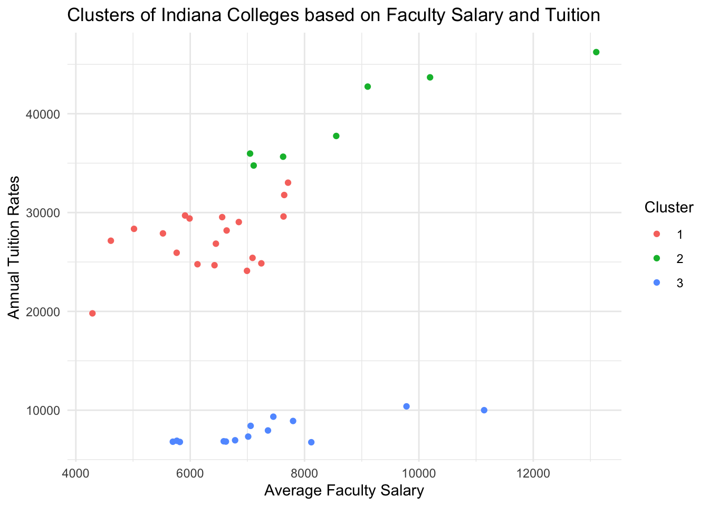
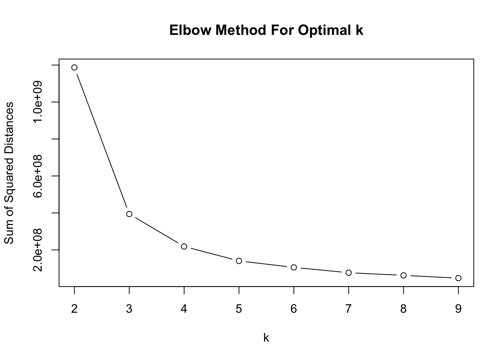
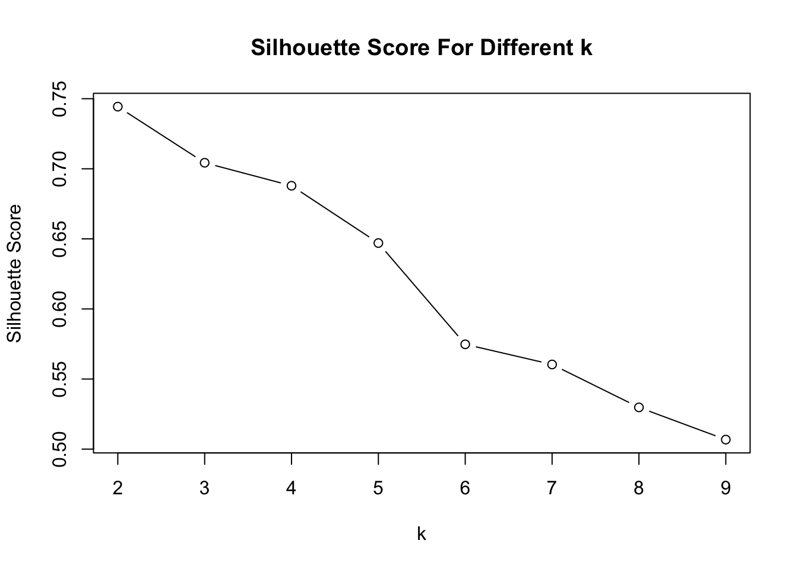
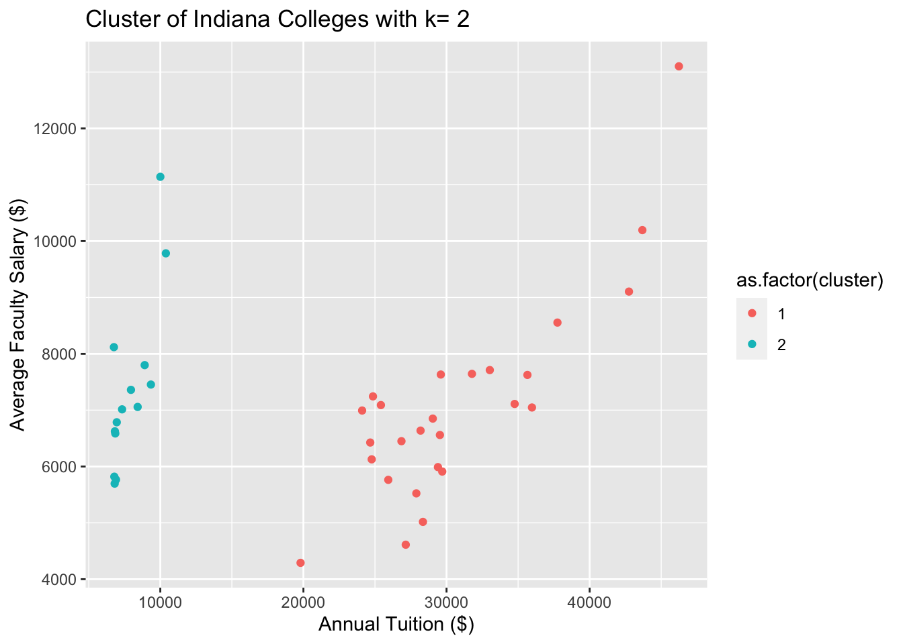
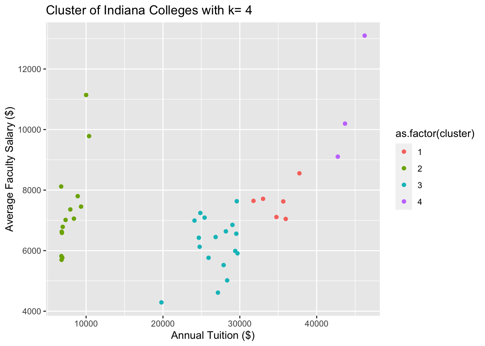
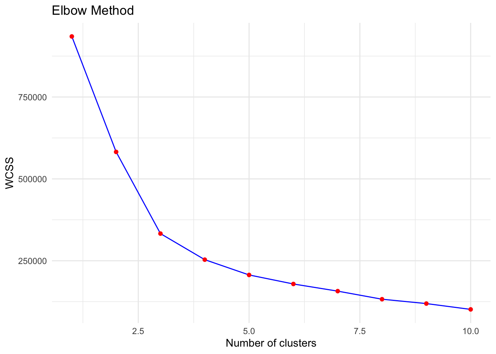
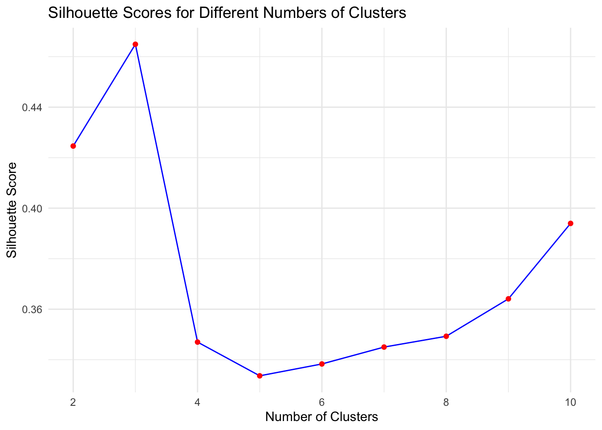
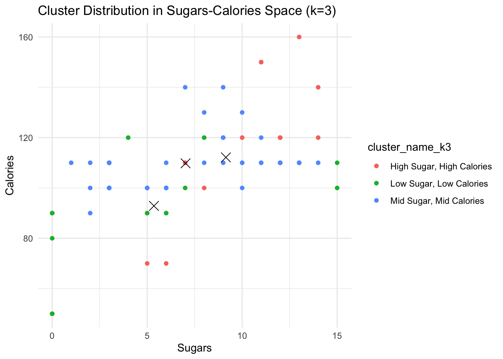
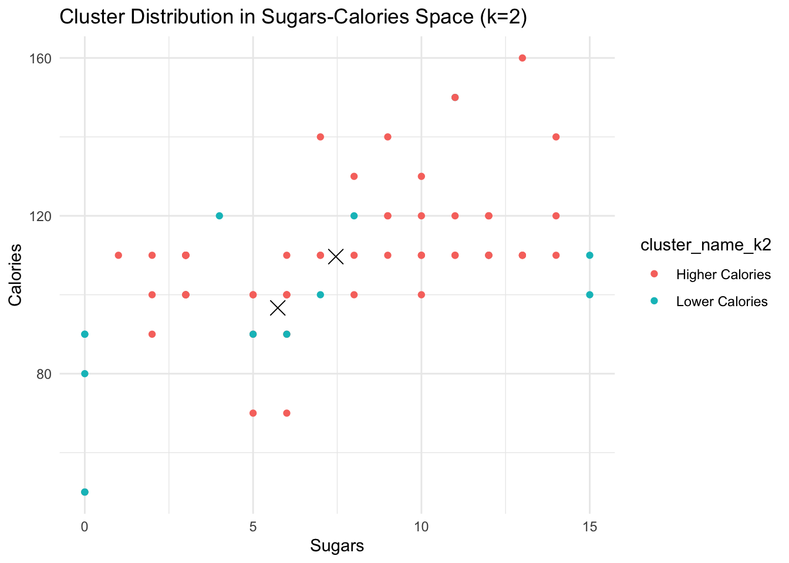
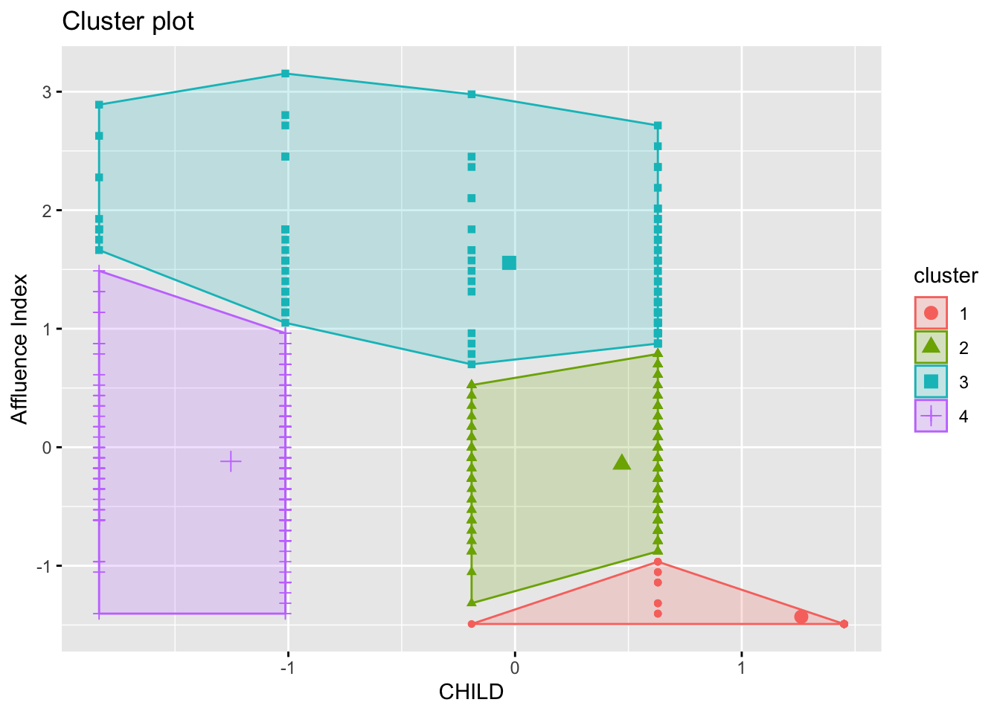

Exercise 1: Clustering Colleges in Indiana Based on Faculty Salary and Tuition
Code
# Load the datasetcollege_data <-read.csv("college.csv")# Filter for colleges in Indiana# This step focuses on a specific geographical area (Indiana) as per the exercise requirement.indiana_colleges <-filter(college_data, state =="IN")indiana_colleges_clustering <-select(indiana_colleges, tuition, faculty_salary_avg)# Perform k-means clustering with k = 3set.seed(123) # for reproducibilitykmeans_result <-kmeans(indiana_colleges_clustering, centers =3)# Add the cluster information back to the data frameindiana_colleges$cluster <- kmeans_result$cluster# Visualizationggplot(indiana_colleges, aes(x = faculty_salary_avg, y = tuition, color =factor(cluster))) +geom_point() +scale_color_discrete(name ="Cluster") +ggtitle("Clusters of Indiana Colleges based on Faculty Salary and Tuition") +xlab("Average Faculty Salary") +ylab("Annual Tuition Rates") +theme_minimal()

We can see three distinct clusters each represented by a different color. These clusters indicate groupings of colleges with similar faculty salary and tuition rate profiles.
Exercise 2: Selecting Optimal Values for k
Elbow Method and Silhouette Score These methods are used to determine the optimal number of clusters.
Code
k_values <-2:9sum_of_squared_distances <-numeric()silhouette_scores <-numeric()for (k in k_values) {set.seed(0) kmeans_result <-kmeans(indiana_colleges_clustering, centers = k, nstart =25) sum_of_squared_distances[k -1] <- kmeans_result$tot.withinss silhouette_scores[k -1] <-mean(silhouette(kmeans_result$cluster, dist(indiana_colleges_clustering))[, 3])}plot(k_values, sum_of_squared_distances, type ="b", xlab ="k", ylab ="Sum of Squared Distances", main ="Elbow Method For Optimal k")

Plotting the Elbow Method and Silhouette Score These plots help in visually identifying the optimal k.
Code
plot(k_values, silhouette_scores, type ="b", xlab ="k", ylab ="Silhouette Score", main ="Silhouette Score For Different k")

Exercise 3: Generating Cluster Diagrams
Plotting clusters for k=2 and k=4 These plots allow for a visual comparison between the two selected k values.
Code
plot_clusters <-function(data, k) {set.seed(0) kmeans_result <-kmeans(data[, c("tuition", "faculty_salary_avg")], centers = k, nstart =25) data$cluster <- kmeans_result$clusterggplot(data, aes(x = tuition, y = faculty_salary_avg, color =as.factor(cluster))) +geom_point() +ggtitle(paste("Cluster of Indiana Colleges with k=", k)) +xlab("Annual Tuition ($)") +ylab("Average Faculty Salary ($)")}plot_clusters(indiana_colleges_clustering, 2)

Code
plot_clusters(indiana_colleges_clustering, 4)

The choice between k=2 and k=4 depends on what you want to use the clustering for. k=2 provides broad categorizations, useful for general analysis. k=4 offers a more detailed view, which can be useful specific analyses.
Exercise 4: Determining the Number of Clusters
Using the Cereals.csv dataset, we have read in the data, dropped all missing values, and selected all variables except for name, mfr, type, weight, shelf, cups, rating.
Code
# Load the datasetfile_path <-"Cereals.csv"cereals_df <-read.csv(file_path, stringsAsFactors =FALSE)# Dropping missing valuescereals_df <-na.omit(cereals_df)# Selecting specific columns for clustering (excluding name, mfr, type, weight, shelf, cups, rating)columns_for_clustering <-setdiff(names(cereals_df), c("name", "mfr", "type", "weight", "shelf", "cups", "rating"))cereals_subset <- cereals_df[columns_for_clustering]# Elbow Method to determine the optimal number of clusterscalculate_wcss <-function(data) { wcss <-numeric(10)for (n in1:10) {set.seed(42) kmeans_result <-kmeans(data, centers = n, nstart =10) wcss[n] <- kmeans_result$tot.withinss }return(wcss)}wcss <-calculate_wcss(cereals_subset)ggplot() +geom_line(aes(x =1:10, y = wcss), color ="blue") +geom_point(aes(x =1:10, y = wcss), color ="red") +labs(title ="Elbow Method", x ="Number of clusters", y ="WCSS") +theme_minimal()

Code
# Silhouette Score to assess the quality of clusterscalculate_silhouette_scores <-function(data) { silhouette_scores <-numeric(9)for (n in2:10) {set.seed(42) kmeans_result <-kmeans(data, centers = n, nstart =10) silhouette_avg <-mean(silhouette(kmeans_result$cluster, dist(data))[, "sil_width"]) silhouette_scores[n -1] <- silhouette_avg }return(silhouette_scores)}silhouette_scores <-calculate_silhouette_scores(cereals_subset)ggplot() +geom_line(aes(x =2:10, y = silhouette_scores), color ="blue") +geom_point(aes(x =2:10, y = silhouette_scores), color ="red") +labs(title ="Silhouette Scores for Different Numbers of Clusters", x ="Number of Clusters", y ="Silhouette Score") +theme_minimal()

Code
num_clusters <-3
Based on Elbow Method and Silhouette Score, choose k = 3 and k = 2 for clustering
# Performing k-means clustering with k = 3set.seed(42)kmeans_k3 <-kmeans(cereals_subset, centers =3, nstart =10)cereals_df$cluster_k3 <-as.factor(kmeans_k3$cluster)# Create names for the clusters for k = 3cluster_names_k3 <-c("High Sugar, High Calories", "Mid Sugar, Mid Calories", "Low Sugar, Low Calories")# Assign names to the clusters in cereals_df for k = 3cereals_df$cluster_name_k3 <- cluster_names_k3[cereals_df$cluster_k3]# Displaying cluster centers for k = 3cluster_centers_k3 <-as.data.frame(kmeans_k3$centers)# Visualization of cluster centers for k = 3 with named clustersggplot(cereals_df, aes(x = sugars, y = calories, color = cluster_name_k3)) +geom_point() +geom_point(data = cluster_centers_k3, aes(x = sugars, y = calories, label = cluster_names_k3), color ="black", size =4, shape =4) +labs(title ="Cluster Distribution in Sugars-Calories Space (k=3)", x ="Sugars", y ="Calories") +theme_minimal()

Code
## Performing k-means Clustering for k = 2# Performing k-means clustering with k = 2set.seed(42)kmeans_k2 <-kmeans(cereals_subset, centers =2, nstart =10)cereals_df$cluster_k2 <-as.factor(kmeans_k2$cluster)# Create names for the clusters for k = 2cluster_names_k2 <-c("Lower Calories", "Higher Calories")# Assign names to the clusters in cereals_df for k = 2cereals_df$cluster_name_k2 <- cluster_names_k2[cereals_df$cluster_k2]# Displaying cluster centers for k = 2cluster_centers_k2 <-as.data.frame(kmeans_k2$centers)# Visualization of cluster centers for k = 2 with named clustersggplot(cereals_df, aes(x = sugars, y = calories, color = cluster_name_k2)) +geom_point() +geom_point(data = cluster_centers_k2, aes(x = sugars, y = calories, label = cluster_names_k2), color ="black", size =4, shape =4) +labs(title ="Cluster Distribution in Sugars-Calories Space (k=2)", x ="Sugars", y ="Calories") +theme_minimal()

Exercise 7: Determine the Number of Clusters
Code
# Read the datasetsoap_data <-read_csv("BathSoapHousehold.csv")
Rows: 600 Columns: 46
── Column specification ────────────────────────────────────────────────────────
Delimiter: ","
dbl (46): Member id, SEC, FEH, MT, SEX, AGE, EDU, HS, CHILD, CS, Affluence I...
ℹ Use `spec()` to retrieve the full column specification for this data.
ℹ Specify the column types or set `show_col_types = FALSE` to quiet this message.
Code
# Select the relevant columns and scalesoap_scaled <-scale(soap_data[, c("CHILD", "Affluence Index")])set.seed(123) # For reproducibilityfviz_nbclust(soap_scaled, FUNcluster = stats::kmeans, method ="wss") +geom_vline(xintercept =4, linetype =2) +labs(subtitle ="Elbow method")
Exercise 8: Visualize the Clusters and Describe Them
Code
set.seed(123) # For reproducibilityk_optimal <-4# Replace this with the number of clusters you choosekmeans_result <-kmeans(soap_scaled, centers = k_optimal, nstart =25)fviz_cluster(kmeans_result, data = soap_scaled, geom ="point")

Cluster 1: Lower Affluence Index, Higher number of Children This group likely consist of families that are more price-sensitive due to there being more children and a lower affluence index. They may prioritize basic necessities and bulk purchases that offer value. Targeted promotions for family packs and budget-friendly options could be effective here.
Cluster 2: Moderate Affluence Index, Lower number of Children This segment likely represents middle-income small families or couples who have moderate spending power who may be focused on a balance of quality and cost. Targeted promotions on mid-range products could be effective.
Cluster 3: High Affluence Index, High number of Children This group likely represents households with children that are more likely to spend on premium products, including those that offer conveinence, enhanced quality, or luxury. Targeted promotion for higher-end products and services could be effective.
Cluster 4: Varying Affluence Index, Lowest number of Children. This group most likely consists of members new to the work force, couples without children, and older adults whose children have moved out. This group will have diverse needs and their interests will range from higher-end luxury goods to practical and high-quality items. Targeted promotion and variety product offerings could be effective for this groups diverse needs.
Exercise 9: Create a Table of Average Value and Total Volume for Each Cluster
Cluster 3 (High Value, Less Volume): Given that Cluster 3 has the highest average value, it suggests that this group of customers tends to purchase more premium or high-margin products, although not necessarily in the largest quantities. These could be customers who opt for luxury or specialized products that are priced higher but bought less frequently.
Cluster 4 (Less Value, High Volume): Despite having a lower average value, Cluster 4 has the highest total volume. This might indicate that the group consists of frequent buyers or customers who purchase items in bulk, but these items may be of lower individual value. This could be a segment that prioritizes essential items or more economically priced goods, which they purchase regularly.